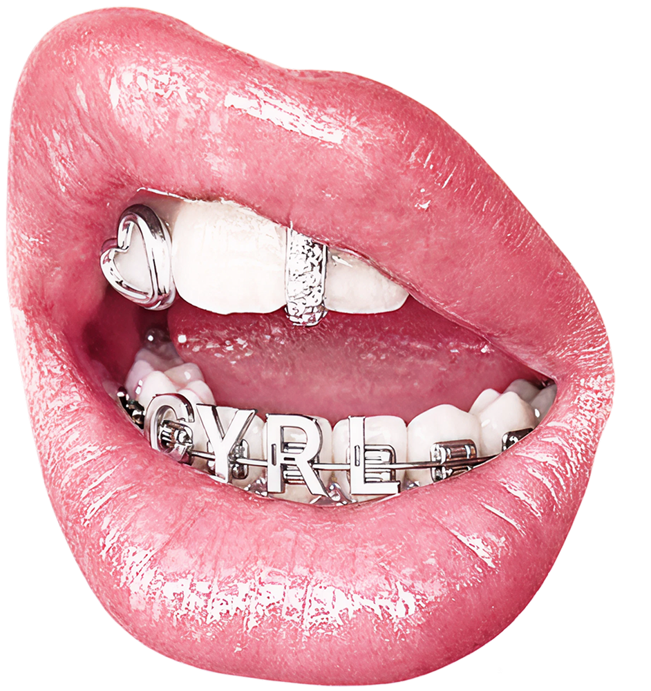

ФЫРКНУВ, ЧОПОРНЫЙ ЗУБНОЙ ВРАЧ ЩЕДРО КЛЕИТ ГЛИФЫ МУЗЕО НА ПРИКУС
ЖУЮЩЕГО

Основной характерной чертой Museo является низкий контраст его глифов. Толщина штрихов почти одинакова по всей букве. Это обеспечивает разборчивость даже в мелких размерах (кеглях), что критически важно для веб-дизайна и больших объёмов текста.